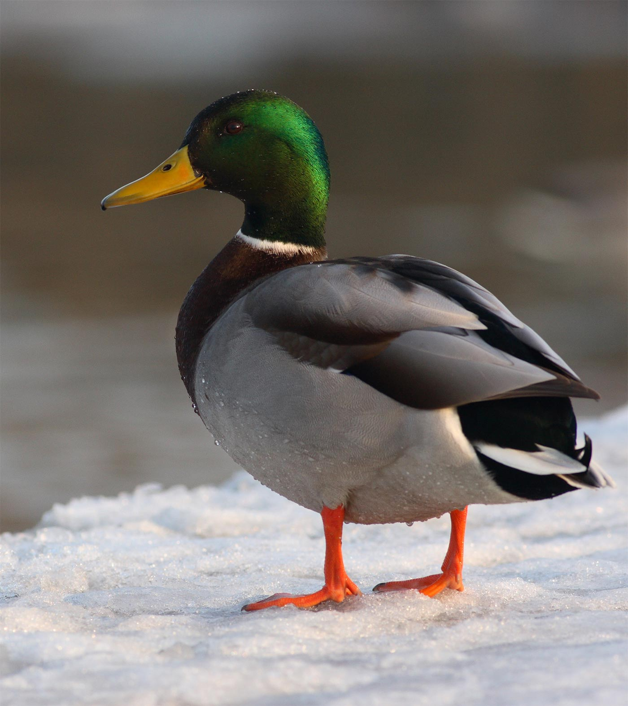

Kacsafajok és élőhelyek
A kacsák a madarak egyik legismertebb és legváltozatosabb rendjébe tartoznak. Számos fajuk alkalmazkodott különböző élőhelyekhez, a tavaktól a folyókig és mocsarakig.
Gyakori kacsafajok Magyarországon:
- Tőkés réce
- Barátréce
- Kanalas réce
- Csörgő réce
- Nyílfarkú réce